Apuntes para la oposición al Cuerpo de Diplomados Comerciales del Estado
9 Déficit público. Conceptos. Financiación y sus consecuencias macroeconómicas. Dominación monetaria y dominación fiscal. La dinámica de la deuda pública y su sostenibilidad.
Tema pendiente de revisión. Este tema está publicado pero aún no lo he revisado a fondo: puede contener erratas o partes por pulir.
9.1 Introducción  1'
1'
En 2025, la deuda pública mundial alcanzó casi el 94 % del PIB, reflejando una tendencia sostenida de financiación mediante déficit en numerosos países, y el FMI prevé que llegue al 100 % en 2029 (International Monetary Fund 2026). Esta dinámica, intensificada por crisis sanitarias, conflictos geopolíticos y presiones estructurales como el envejecimiento poblacional, plantea una cuestión clave: ¿es sostenible el déficit público en el largo plazo?
Aunque el endeudamiento puede ser una herramienta legítima para impulsar el crecimiento y atender necesidades sociales, su uso excesivo puede comprometer la estabilidad fiscal, elevar los costes financieros y limitar el margen de maniobra ante futuras crisis.
Por lo tanto, analizar cómo se financia el déficit —ya sea mediante deuda, impuestos o emisión monetaria— y evaluar sus efectos sobre la economía, la equidad intergeneracional y la confianza institucional resulta esencial para entender los desafíos actuales. En este contexto, la sostenibilidad del déficit público no es solo una cuestión contable, sino una decisión política con profundas implicaciones económicas y sociales.
Por consiguiente, el tema responde a tres preguntas:
¿Cómo se financia el déficit y con qué consecuencias macroeconómicas? Tras definir el déficit y su restricción presupuestaria, se estudian el marco tradicional y los modelos de largo plazo.
¿Cuándo es sostenible la deuda resultante? Se analiza su dinámica.
¿Quién cede cuando no lo es, la autoridad fiscal o la monetaria? Es la dominación monetaria y fiscal.
Este orden no es el del enunciado: la dominación se estudia al final porque solo se entiende cuando la deuda deja de ser sostenible.
9.2 El déficit público: definición y concepto 2'30"
Comenzaremos la exposición analizando el concepto de déficit.
Déficit público
El déficit público, \(D\), es la diferencia negativa entre los ingresos, \(I\), y los gastos, \(G\), del conjunto de las Administraciones Públicas en un ejercicio económico \[D_{t}=G_{t}-I_{t} \tag{9.1}\] es decir, refleja el desahorro neto del sector público.
En 2025, España cerró con un déficit público del 2,39 % del PIB. Sin el gasto extraordinario de la DANA, que supuso 3.550 millones de euros, habría sido del 2,18 %.
Necesidad de financiación
en contabilidad nacional el déficit se mide como la necesidad de financiación, \(NF\), es decir, la diferencia entre los gastos totales, incluidos los intereses, y los ingresos: \[NF_{t}=G_{t}-I_{t} \tag{9.2}\] Esta cifra refleja cuánto debe conseguir el Estado para cubrir sus gastos corrientes y sus gastos de capital1, siendo la medida más utilizada para comparaciones internacionales e intertemporales del sector público.
Saldo público total
la necesidad de financiación se puede expresar como un saldo: el saldo público total. Este saldo incluye todos los ingresos y gastos, financieros y no financieros, y da una visión completa del resultado presupuestario: \[SP_{t}=I_{t}-G_{t} \tag{9.3}\]
Saldo primario
sin embargo, para evaluar la política fiscal actual sin el peso de decisiones pasadas, se utiliza el saldo primario \[SPr_{t}=SP_{t}+i_{t}\cdot B_{t-1} \tag{9.4}\] o bien \[SPr_{t}=I_{t}-GNF_{t} \tag{9.5}\] donde \(GNF_{t}\) son los gastos no financieros, es decir, sin intereses, y el déficit primario es la necesidad de financiación neta de la carga de intereses de la deuda pública \[DPr_{t}=NF_{t}-i_{t}\cdot B_{t-1} \tag{9.6}\] De esta forma, al excluir los intereses de la deuda, se ve si el gobierno está siendo fiscalmente responsable en el presente, lo que refleja de forma más precisa la orientación de la política presupuestaria actual. En 2025, España registró un superávit primario del 0,21 % del PIB sin el efecto de la DANA (3.534 millones de euros), es decir, los ingresos no financieros superaron a los gastos no financieros. Fue el primero desde 2007. Con la DANA, el saldo primario cerró en equilibrio.
Saldo estructural
el saldo total aún puede estar influido por el ciclo económico. Por eso, se descuenta el componente cíclico, \(SC\), la parte del saldo que se debe a que la economía está por encima o por debajo de su nivel potencial, y se obtiene el saldo estructural: \[SE_{t}=SP_{t}-SC_{t} \tag{9.7}\] Este muestra el déficit que persistiría incluso si la economía estuviera en su nivel potencial.
El saldo estructural no se observa directamente y su estimación depende del método con el que se calcule el componente cíclico. Según las previsiones de mayo de 2025, el déficit estructural de España apenas bajaba del 2,9 % al 2,8 % del PIB, por retos persistentes como el envejecimiento y el gasto en pensiones.
Saldo estructural primario
Para afinar aún más el análisis, se combinan el enfoque primario y el estructural, y además se eliminan las medidas no recurrentes o medidas one-off2, \(MNR\). Así se obtiene el saldo estructural primario, cuya variación de un año a otro es el mejor indicador del esfuerzo fiscal discrecional del gobierno3 \[SEPr_{t}=SPr_{t}-SC_{t}-MNR_{t} \tag{9.8}\]
Se estima que el saldo estructural primario mejoró en 0,6 puntos en 2024, hasta el \(-\)0,4 % del PIB, y se preveía que alcanzara el \(-\)0,2 % en 2025, en línea con las previsiones del Plan Fiscal y Estructural de Medio Plazo (PFEMP). Esto refleja una política fiscal neutral, aunque con margen limitado para absorber shocks futuros.
Restricción presupuestaria del Gobierno
Finalmente, todas estas ecuaciones se sintetizan en la restricción presupuestaria. Esta fórmula muestra cómo el Estado financia sus gastos:
Vía impuestos.
Emisión de deuda pública, es decir, nuevos pasivos financieros del sector público con otros sectores, residentes o no.
Monetización, donde la autoridad monetaria, mediante la monetización del déficit, adquiere deuda pública y como contrapartida crea dinero de alta potencia, lo que expande la base monetaria.
La capacidad del sector público de financiar su gasto con emisión de dinero se conoce como señoreaje, es decir, los ingresos que obtiene el gobierno con la emisión de dinero.
En suma, es la ecuación que cierra el círculo del análisis fiscal: \[G_{t}+i\cdot B_{t-1}=T_{t}+B_{t}-B_{t-1}+M_{t}-M_{t-1} \tag{9.9}\] es decir, el sector público tiene cada periodo un volumen de gastos, \(G_{t}\), y de cargas financieras, \(i\cdot B_{t-1}\), que tiene que financiar a través de impuestos, \(T_{t}\), emisión de deuda, \(B_{t}-B_{t-1}\), o monetización, \(M_{t}-M_{t-1}\).
La deuda pública es el stock de pasivos financieros de las Administraciones Públicas, y el déficit es el flujo que lo aumenta cada año.4
Restricción presupuestaria intertemporal
La restricción de cada periodo no limita por sí sola cuánto puede endeudarse el gobierno. Lo que limita su endeudamiento es la condición de no Ponzi: el gobierno tiene que planear recaudar ingresos suficientes, en valor presente, para devolver su deuda y financiar sus gastos.5 Sea \(\tilde{D}_{t}=\left(1+i_{t-1}\right)\cdot B_{t-1}\) el principal más los intereses de la deuda que vencen en \(t\), \(P_{t}\) el nivel de precios, \(f\) el superávit primario real y \(s\) el señoreaje real, y sea \(r\) el tipo de interés real, que se supone constante. Entonces: \[\frac{\tilde{D}_{t}}{P_{t}}=\sum^{\infty}_{j=0}\frac{f_{t+j}+s_{t+j}}{\left(1+r\right)^{j}} \tag{9.10}\] es decir, la deuda real que vence hoy tiene que financiarse, en valor presente, con los superávits primarios y el señoreaje futuros. Esta ecuación hila el resto del tema. El apartado de sostenibilidad analiza cuándo se cumple con superávits primarios, y el de dominación monetaria y fiscal analiza qué ocurre cuando no basta y quién se ajusta.
9.3 Financiación del déficit y sus consecuencias macroeconómicas 7'30"
Los gobiernos pueden financiar su déficit a través de distintos mecanismos que pueden agruparse en tres grandes grupos: impuestos, deuda y señoreaje. Primero se presenta el debate tradicional, desde el enfoque clásico hasta la discusión entre keynesianos y monetaristas sobre la financiación óptima, y después se estudian los modelos de largo plazo.
Neoclásicos
Para los clásicos, la política fiscal es ineficaz independientemente de cómo se financie. Una política expansiva produce un efecto expulsión total sobre la inversión privada. Si se financia con la creación de dinero, solo causará inflación, cumpliendo la dicotomía clásica. Sin embargo, una reducción de impuestos sí puede estimular la oferta de trabajo y la producción6.
Por lo tanto, los clásicos abogan por el presupuesto equilibrado, \(G=T\), y solo aceptan el déficit, según la llamada regla de oro, para financiar inversiones que generen rendimientos futuros. Limitaban la intervención a garantizar 3 objetivos: justicia, seguridad y defensa, y provisión de obras públicas.
Debate tradicional
El debate tradicional se encuadra en el modelo IS-LM.
Modelo
En el corto plazo, podemos considerar los precios fijos (la oferta agregada es totalmente horizontal al nivel de precios fijado), por lo que el nivel de renta vendrá determinado por la demanda agregada. Por lo tanto, la política fiscal será, en principio, eficaz sobre el nivel de renta a corto plazo, por lo que puede jugar un papel clave en la estabilización del output si adquiere un tono contracíclico.
Las dos curvas representan el mercado de bienes y de dinero:
Curva IS, representa los pares de tipo de interés y renta que generan equilibrio en el mercado de bienes: \[Y=C+I+G=C_{0}+c\cdot\left(1-\tau\right)Y+I_{0}-b\cdot r+G_{0} \tag{9.11}\] donde \(Y\) es la producción, \(C\) la demanda de consumo, \(I\) la demanda de inversión y \(G\) la demanda de gasto público.
Curva LM, representa los pares de tipo de interés y renta que generan equilibrio en los mercados de dinero y de bonos: \[\dfrac{M}{P}=k\cdot Y-h\cdot r \tag{9.12}\] donde \(M\) es la oferta de dinero, \(P\) los precios, \(k\) el parámetro que mide las variaciones de dinero ante variaciones en la renta y \(h\) las correspondientes con el tipo de interés.
Efectos de una política fiscal expansiva
Gráficamente, en un plano de tipo de interés, \(r\), y renta, \(Y\), como el de la Figura 9.1, representaremos las dos curvas del modelo, en cuya intersección, \(E_{0}\), el mercado de bienes y dinero estarán en equilibrio para un tipo de interés y renta asociados.
Así, una política fiscal expansiva desplaza la curva IS a la derecha y produce 2 efectos7:
Efecto multiplicador o renta (\(E_{0}\) a \(E_{1}\)): el aumento del gasto público (o disminución de los impuestos) aumenta la renta a través del multiplicador.
Efecto expulsión o crowding out (\(E_{1}\) a \(E_{2}\)): el aumento de la renta incrementa la demanda de dinero, disminuyendo el precio de los bonos, por lo que el tipo de interés se eleva, la inversión disminuye y la renta cae8.
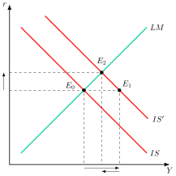
Multiplicadores.
Los multiplicadores keynesianos de la política fiscal (con impuesto de suma fija, no proporcional) en economía cerrada son: \[\dfrac{\partial Y}{\partial G}=\dfrac{1}{1-c+b\cdot\frac{k}{h}}\quad\quad\dfrac{\partial Y}{\partial T}=-\dfrac{c}{1-c+b\cdot\frac{k}{h}} \tag{9.13}\]
Efectividad.
La efectividad de la política fiscal va a depender de la sensibilidad de la inversión y de la demanda de dinero al tipo de interés: para los keynesianos, la inversión es muy poco sensible (IS vertical) y la demanda de dinero es muy sensible al tipo de interés (LM plana), lo que hace que la política fiscal sea muy efectiva. Para los monetaristas es al contrario.
Keynesianos
Para Keynes, la política fiscal es efectiva, ya que se dan los llamados “2 eslabones débiles”:
La inversión es poco sensible al tipo de interés, \(b\) (ya que está dominada por los animal spirits). Por lo que \(b\) tendrá un valor bajo.
La demanda de dinero es muy sensible al tipo de interés, \(h\) (ya que solo los bonos son sustitutivos del dinero, por lo que los cambios de la demanda de bonos ante una variación del tipo de interés afectarán mucho a la demanda de dinero), y poco a la renta, \(k\). Por lo que \(h\) tendrá un valor alto y \(k\), uno bajo.
Cuando la demanda de dinero es infinitamente elástica al tipo de interés (LM horizontal) hay trampa de liquidez, el caso límite de \(h\) alto.
Gráficamente, en un plano tipo de interés y renta como el de la Figura 9.2, se representa la curva IS que tendrá una gran pendiente y la curva LM con una pendiente mucho menor, y se parte de una situación de equilibrio \(E_{0}\), para un tipo de interés, \(r_{0}\), y renta, \(Y_{0}\).

Para los keynesianos un aumento del gasto público va a ser muy eficaz ya que la curva IS se desplazará hacia la derecha aumentando considerablemente el nivel de renta –efecto renta/multiplicador– a \(E_{1}\) pero sin aumentar mucho el tipo de interés a \(r_{1}\) –efecto crowding out– alcanzando finalmente el equilibrio en \(E_{2}\).
De esta forma, la política fiscal es muy efectiva y el efecto expulsión muy bajo por la poca sensibilidad de la inversión a los tipos de interés.
Analicemos ahora los efectos según los keynesianos de cada modalidad de financiación del déficit.
Déficit financiado con impuestos
Es el menos expansivo ya que los impuestos minoran la renta disponible. Como, según lo que veíamos, el multiplicador de un aumento del gasto público es mayor que el de una disminución de los impuestos (ya que el gasto público estimula directamente la demanda agregada, mientras que los impuestos influyen en ella indirectamente –pues el aumento de la renta se va a repartir en consumo y ahorro–), esto lleva a formular el teorema del multiplicador del presupuesto equilibrado (Haavelmo 1945), según el cual un aumento del gasto público financiado con impuestos genera un presupuesto equilibrado y, al mismo tiempo, tiene un efecto expansivo sobre la demanda agregada.
Gráficamente sería igual que el anterior, solo que la curva IS no se desplazaría tanto.
Déficit financiado con deuda
La curva IS se desplaza más a la derecha que con la financiación vía impuestos, pero existe un efecto expulsión adicional por el llamado efecto cartera.
Se trata de un modelo desarrollado por Tobin (1961), que parte de la hipótesis de que la cartera de los agentes está compuesta por 3 activos: dinero, \(M\), bonos, \(B\), y capital , \(K\), considerándose activo líquido únicamente al dinero. Los agentes desean mantener constante una ratio de liquidez \(\alpha\) en todo momento: \[\alpha=\dfrac{M}{B+K} \tag{9.14}\]
Si el Gobierno emite deuda para financiar el déficit, \(\uparrow B\), caerá la ratio de liquidez, \(\downarrow\alpha\), y el agente aumentará su demanda de dinero, \(\uparrow M\), y aumentará el tipo de interés para racionar esta mayor demanda. Como se observa en la Figura 9.3, esto se traduce en un desplazamiento a la izquierda de la \(LM\), lo que hace caer la renta debido a la caída de la inversión que provoca ese aumento adicional del tipo de interés (efecto cartera). Es decir, a los efectos renta y expulsión se suma otro efecto negativo: el efecto cartera. Aun así, la renta (y el tipo de interés) aumenta más que con la financiación vía impuestos ya que el mayor efecto renta compensa el nuevo efecto negativo cartera.
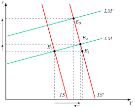
Déficit financiado con monetización
Es la vía más expansiva para los keynesianos, ya que a los efectos renta y expulsión se suma otro efecto positivo: el del aumento de la oferta monetaria, que desplaza la curva LM hacia la derecha, tal y como se observa en la Figura 9.4.
La renta aumenta más que en cualquiera de las otras formas de financiación, aunque el tipo de interés puede subir o bajar según cuánto desplace el aumento de la oferta monetaria a la \(LM\). En cualquier caso, subirá menos (o bajará más) que con las otras formas de financiación.
El aumento de la oferta monetaria permite absorber el aumento de la demanda de dinero derivado de la mayor renta que genera la política fiscal expansiva, limitando así el efecto negativo del aumento del tipo de interés (efecto expulsión o crowding-out).
Nótese que lo que es muy efectivo según Keynes es la financiación del déficit con una política monetaria expansiva, no la política monetaria en sí (que, según él, es en sí misma inefectiva por los “2 eslabones débiles”).
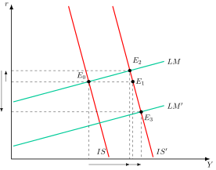
Monetaristas
Los monetaristas rechazan los «dos eslabones débiles». Para ellos, la inversión es muy sensible al tipo de interés y la demanda de dinero lo es poco, de modo que la curva \(IS\) es plana y la \(LM\) empinada. Además, añaden el efecto riqueza, que es el aumento del consumo y de la demanda de dinero que provoca que los agentes se perciban más ricos al tener más bonos o más dinero.9 Así:
Política fiscal expansiva: aumenta la renta solo al principio y eleva mucho el tipo de interés, con un efecto expulsión elevado.
Déficit financiado con deuda: la mayor riqueza eleva el consumo, que desplaza la \(IS\) a la derecha, y la demanda de dinero, que desplaza la \(LM\) a la izquierda. El resultado es un efecto expulsión total, hasta el punto de que la política fiscal podría ser contractiva.
Déficit financiado con monetización: el aumento de la oferta monetaria mitiga ese efecto al reducir los tipos.
Largo plazo: la monetización se anula por la teoría cuantitativa del dinero, y de ahí que los monetaristas defiendan una política monetaria reglada.10
Modelos de largo plazo
Como los argumentos anteriores se presentaron en un modelo de corto plazo, se estudian a continuación modelos de largo plazo, con conclusiones de política económica distintas.
Modelo de Blinder y Solow
Autores como Blinder y Solow (1973) rechazaron la visión de que la política fiscal es irrelevante, argumentando que sus efectos a largo plazo, y la forma en que el déficit se financia, son cruciales. Sus principales conclusiones son:
A largo plazo, el déficit público financiado con emisión de bonos puede ser más expansivo que el financiado con incrementos en la cantidad de dinero.
Un déficit financiado con bonos, a diferencia de uno financiado con dinero, puede conducir a una situación de inestabilidad si no se cumplen ciertas condiciones.
Para la primera afirmación, sea \(G\) el gasto público, \(B\) los pagos de intereses de la deuda pública, \(T\) el tipo impositivo e \(Y\) la renta. La restricción presupuestaria del gobierno a largo plazo es: \[G+B=T\left(Y+B\right) \tag{9.15}\] es decir, el gasto del gobierno, incluidos los intereses, se financia con la recaudación sobre una renta que incluye esos intereses, porque son ingreso de los tenedores de bonos. El multiplicador a largo plazo depende de cómo se financie el déficit:
Financiación con dinero, \(dB=0\): el multiplicador es \(\frac{dY}{dG}=\frac{1}{T}\).
Financiación con bonos, \(dM=0\): el multiplicador es \(\frac{dY}{dG}=\frac{1}{T}+\frac{1-T}{T}\cdot\frac{dB}{dG}\), mayor que el anterior porque, a largo plazo, el presupuesto tiene que volver a equilibrarse y la renta debe subir lo suficiente para que la recaudación cubra también los intereses de la nueva deuda (Blinder y Solow 1973, 327).11
En definitiva, Blinder y Solow incorporan la restricción presupuestaria en un marco dinámico, demostrando que la política fiscal es relevante y que la elección de la financiación tiene efectos distintos y duraderos. Sin embargo, su modelo no analiza la sustituibilidad de la deuda con otros activos, un aspecto que fue explorado posteriormente por autores como Benjamin Friedman.
Modelo de Benjamin Friedman
Benjamin Friedman (1978) introduce los títulos de deuda a corto plazo como sustitutivos válidos del dinero, por lo que financiar déficits con ellos tendría efectos similares a la monetización. Aumentan la ratio de liquidez de los agentes, que reducen su demanda de dinero, lo que baja el tipo de interés y desplaza la curva \(LM\) a la derecha. La inversión y la renta aumentan, es decir, hay un efecto crowding-in. La deuda a largo plazo tiene, en cambio, los mismos efectos que en la teoría tradicional.12
La equivalencia ricardiana
Dentro de los modelos a largo plazo, Barro (1974) revitaliza la teoría de la equivalencia ricardiana, que propone que, dada la senda de gasto público, es irrelevante financiarlo con deuda o con impuestos. Bajo el supuesto de que los agentes son racionales y actúan por altruismo intergeneracional, financiar el gasto con deuda tendrá el mismo efecto que financiarlo con un aumento de los impuestos presentes.13
Los supuestos clave de este modelo son:
Hipótesis de Expectativas Racionales (HER): los agentes anticipan con precisión los impuestos futuros que serán necesarios para pagar la deuda.
Altruismo intergeneracional y herencias: los individuos se preocupan por el bienestar de las futuras generaciones y utilizan las herencias para compensarles por la carga de la deuda que heredarán.
Deuda no es riqueza neta: la deuda pública no se percibe como un aumento de la riqueza, al contrario que en el modelo de Blinder y Solow, ya que su valor actual se ve compensado por la expectativa de futuros impuestos.
Impuestos de suma fija: los impuestos son neutrales y no distorsionan los incentivos económicos, como la oferta de trabajo o el ahorro.
Mercados de capitales completos y perfectos: los agentes tienen acceso ilimitado al crédito.
En este contexto, una rebaja de impuestos financiada con deuda, con el gasto público dado, no afecta al consumo privado, ya que los individuos racionales aumentan su ahorro en el presente para poder pagar los impuestos futuros. Por lo tanto, financiar un mismo gasto con deuda o con impuestos tiene el mismo efecto sobre la demanda agregada.
Barro señala que, aunque no debe existir un equilibrio presupuestario permanente, los déficits deben gestionarse de forma que los impuestos mantengan una trayectoria relativamente estable a lo largo del tiempo. Por ejemplo, en épocas de crisis o guerra con alto gasto, se puede incurrir en déficits, que luego serían compensados en períodos de mayor estabilidad.14
Sin embargo, el modelo está sujeto a supuestos muy restrictivos que, al no cumplirse en la realidad, rompen la equivalencia ricardiana:
Vida finita y falta de altruismo: Si los individuos tienen una vida finita y, además, no dejan herencias porque no les importa el bienestar de sus descendientes, parte de los impuestos futuros recaerá sobre generaciones que no les preocupan. Verán entonces la deuda como riqueza neta y consumirán una parte de la rebaja de impuestos en lugar de ahorrarla.15
Impuestos distorsionantes: Como los impuestos sobre el trabajo o el capital no son de suma fija, una subida de impuestos sí afectaría los incentivos, reduciendo la oferta de trabajo y la producción.
Mercados de capital imperfectos: La existencia de restricciones crediticias hace que el consumo dependa de la renta disponible. En este caso, financiar el gasto con impuestos reduciría la renta disponible y, por ende, el consumo, a diferencia de la financiación con deuda.
Implicaciones de política económica
La equivalencia ricardiana es importante porque, aunque sus supuestos son restrictivos, sirve de referencia teórica: para que la forma de financiación importe tiene que fallar alguno de sus supuestos. Permite analizar los canales a través de los cuales la política fiscal puede ser efectiva a largo plazo y cómo las reformas estructurales buscan la sostenibilidad fiscal. Además, su lógica explica los “efectos no keynesianos” de las consolidaciones fiscales, donde la confianza puede impulsar la economía16.
No obstante, autores como Feldstein (1976) subrayan que Barro no considera el efecto del crecimiento de la economía sobre la carga de la deuda. Por lo tanto, es necesario analizar los condicionantes de la sostenibilidad del déficit y la deuda pública.
9.4 Sostenibilidad del déficit público 5'
Un déficit es sostenible17 cuando la política económica –fiscal y monetaria– que lo genera se puede mantener indefinidamente en el tiempo, esto es, cuando permite alcanzar una ratio constante de deuda pública sobre PIB1819. De ahí que esta ratio constituya un importante determinante del riesgo-país.
En contraposición, una situación presupuestaria es insostenible si la ratio deuda pública / PIB crece de forma continuada y sin límite.
Para analizar la sostenibilidad del déficit se va a utilizar la restricción presupuestaria del gobierno \[G_{t}+i\cdot B_{t-1}=T_{t}+B_{t}-B_{t-1}+M_{t}-M_{t-1}\]
Con el fin de trabajar en términos de PIB, lo dividimos todo por el PIB nominal del periodo \(t\), \(P_{t}\cdot Y_{t}\) y se adoptan los siguientes supuestos
La tasa de crecimiento del PIB, \(g\), es constante.
La velocidad del dinero, \(V\), es constante por lo que la masa monetaria en relación al PIB, \(m\), es constante: \[\dfrac{1}{V}=\dfrac{M_{t}}{P_{t}\cdot Y_{t}}=m \tag{9.16}\]
La tasa de crecimiento de la masa monetaria \(M\) es \(\theta\) y equivale a \[1+\theta=\left(1+\pi\right)\left(1+g\right) \tag{9.17}\]
El tipo de interés real, \(r\), es constante y cumple el teorema de Fisher \[1+r=\dfrac{1+i}{1+\pi} \tag{9.18}\]
Desarrollando la restricción presupuestaria en términos de PIB20 se obtiene la siguiente expresión: \[b_{t+1}=d_{t+1}-m\cdot\dfrac{\theta}{1+\theta}+\dfrac{1+r}{1+g}\cdot b_{t} \tag{9.19}\]
El efecto bola de nieve es el aumento de la ratio de deuda que producen por sí solos los intereses cuando el tipo de interés real supera al crecimiento, de modo que la deuda crece más deprisa que el PIB aunque el saldo primario sea nulo.21
Adicionalmente, suponiendo que el gobierno no puede emitir dinero, \(\theta=0\), –porque, por ejemplo, la política monetaria ha sido delegada en una autoridad independiente– para que el déficit sea sostenible, la ratio deuda pública sobre PIB ha de ser estable, es decir, \(b_{t+1}=b_{t}\) por lo que la expresión quedará de la siguiente manera \[-d_{t+1}=\dfrac{r-g}{1+g}\cdot b_{t} \tag{9.20}\] es decir, el superávit primario al final del periodo \(t\) tiene que ser igual al coste efectivo de la deuda viva ajustado por la tasa de crecimiento del PIB, \(1+g\).
La función de sostenibilidad del déficit será la siguiente: \[d_{\text{sost}}=f\big(\underbrace{g}_{+},\underbrace{i}_{-},\underbrace{\pi}_{+},\underbrace{b}_{-\text{ si }r>g}\big) \tag{9.21}\] por consiguiente, un país tendrá más margen para incurrir en déficit cuanto22:
Mayor sea su tasa de crecimiento económico, \(g\), de ahí la importancia del destino que se le dé a esos fondos: gasto corriente o inversión pública.
Menor sea el tipo de interés nominal que paga por su deuda, \(i\), de ahí la importancia de generar confianza en los mercados de capitales.
Mayor sea la tasa de inflación, \(\pi\), pues reduce el tipo real que paga el país mientras el tipo nominal, \(i\), no se ajuste, de ahí la tentación de usar la inflación para reducir la deuda, que se analiza más adelante.
Menor sea la ratio deuda pública sobre PIB, \(b\), siempre que el tipo de interés real supere al crecimiento, que es el caso preocupante. Además, cuanto mayor sea la ratio de deuda pública, mayor será en principio el tipo de interés nominal que tendrá que pagar el país, por lo que los problemas de deuda tienden a retroalimentarse.
Análisis gráfico de la dinámica de deuda
Para ver la dinámica de la deuda, se representa la ratio deuda pública / PIB al final del período \(t\), \(b_{t+1}\), con respecto a la ratio deuda pública / PIB al inicio de ese período \(t\), \(b_{t}\). Así, la ecuación dinámica de la deuda es la ya vista: \[b_{t+1}=\underbrace{d_{t+1}-m\cdot\dfrac{\theta}{1+\theta}}_{\text{Ordenada en el origen}}+\underbrace{\dfrac{1+r}{1+g}}_{\text{Pendiente}}\cdot b_{t}\]
Gráficamente, en un plano de deuda en \(t\) y en \(t+1\) como el de la Figura 9.5, se puede observar la dinámica de deuda:
Se traza la bisectriz que permite determinar los puntos de estabilidad donde la deuda al principio y final del periodo se iguala.
Se supone que no hay monetización.
Una curva que refleja la ecuación anterior. Nótese que, si \(r>g\), la pendiente será mayor que uno y viceversa.
Se pueden dar 4 combinaciones, en función de si tenemos déficit o superávit primarios, y de si el tipo de interés real es mayor o menor que la tasa de crecimiento económico23. En función del valor de \(d_{t+1}\), la ratio de deuda de equilibrio podrá ser positiva o negativa y, en función de \(r\)y \(g\), este equilibrio podrá ser estable o inestable.
Se analizan tres casos, porque con superávit primario y \(r<g\) la deuda converge siempre24.
Caso 1: déficit primario (\(d>0\)) y \(r<g\): proceso estable25
La deuda converge independientemente de si la deuda en el periodo \(t-1\) es mayor o menor que la deuda correspondiente al estado estacionario, \(b^{*}\). Implicación: La política fiscal y monetaria serán compatibles. Es decir, los objetivos de déficit primario y tasa de inflación son compatibles.
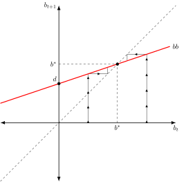
Caso 2: déficit primario (d>0) y r>g:
Como se observa en la Figura 9.6 (a) en este caso la deuda pública mostrará una trayectoria explosiva, no existiendo así un equilibrio a largo plazo. Independientemente de donde se posicione la deuda, la senda será explosiva.
Implicación: Los objetivos de política fiscal y monetaria (déficit primario, tasa de inflación) serán incompatibles. Es decir, siempre y cuando la tasa de crecimiento de la economía no varíe, para que la deuda pública sea sostenible será necesario o bien corregir el desequilibrio presupuestario (que haya superávit primario continuo) o bien reducir el coste de la deuda viva (\(r\)) (lo cual puede lograrse aumentando la inflación). La solución nos lleva al caso 326.
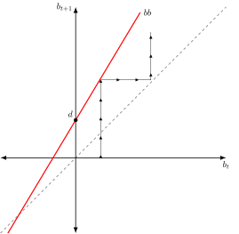
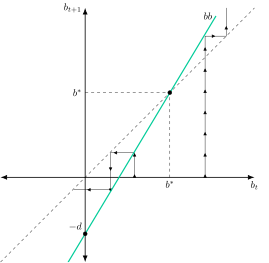
Caso 3: superávit primario (d<0) y r>g:
Como se observa en la Figura 9.6 (b) con un superávit primario, \(-d\), en puntos a la izquierda de \(b^{{*} }\) la deuda tiende a amortizarse. En puntos a la derecha se hace explosiva.
Nótese que, para asegurar la sostenibilidad del déficit público con unos determinados parámetros de \(r\) y \(g\), no es tan sencillo como hacer un simple cálculo y exigir un superávit primario del x%. Puede haber efectos colaterales, ya que una política fiscal contractiva puede reducir el crecimiento económico, de forma que, aunque la recta de dinámica de la deuda se desplace hacia abajo, podría ganar pendiente (ya que \(\downarrow g\)), por lo que un superávit podría no asegurar tampoco la sostenibilidad de la senda fiscal.
Gráficamente, en un plano de deuda en \(t\) y en \(t+1\) como el de la Figura 9.7, se representan la curva de dinámica de la deuda con déficit primario y \(r>g\), \(bb\), y la que resulta de corregirlo, \(bb^{\prime}\). Así:
Con la curva \(bb\), y partiendo de la deuda inicial, \(b^{0}\), la deuda pública es insostenible y no deja de crecer.
Para mantener \(b^{0}\), el gobierno debe pasar a un superávit primario, \(-d\), lo que desplaza la curva hacia abajo, hasta \(bb^{\prime}\), cambiando la ordenada en el origen y manteniendo la pendiente.
El resultado es una deuda sostenible en el punto \(E\), donde \(b^{0}=b_{t}=b_{t+1}\).
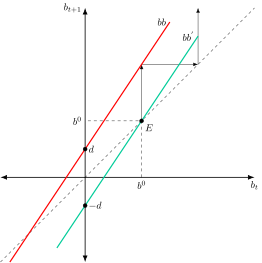
Conclusiones de sostenibilidad de deuda
Siempre que la tasa de crecimiento económico sea mayor que el tipo de interés real, se va a alcanzar un equilibrio estable, por lo que, en principio, la política fiscal será sostenible con independencia del nivel de déficit/superávit.
El caso preocupante es el de un tipo de interés real mayor que la tasa de crecimiento económico. En este caso, el Gobierno se verá constreñido a alcanzar un determinado nivel de superávit o déficit primarios, en función de si parte de una situación inicial con deuda (en cuyo caso necesitará un superávit) o de si es acreedor neto (supuesto poco realista ya que prácticamente todos los países tienen algún nivel de deuda).
El caso contrario, con el tipo de interés por debajo del crecimiento, es más habitual de lo que se pensaba. Blanchard (2019, 1202) muestra que en EE. UU., desde 1950, los tipos nominales han sido de media inferiores al crecimiento nominal del PIB: el tipo a un año ha promediado el 4,7 %, el tipo a diez años el 5,6 % y el crecimiento el 6,3 %. Si el futuro se parece al pasado, refinanciar la deuda sin subir impuestos puede ser factible, de modo que la deuda pública puede no tener coste fiscal (Blanchard 2019, 1197).
La evidencia empírica apunta a que los gobiernos corrigen la deuda. Bohn (1998, 949) halla que el superávit primario de EE. UU. es una función creciente de la ratio deuda/PIB, lo que indica que la política fiscal satisface una restricción presupuestaria intertemporal.
Implicaciones de política económica
Si la deuda es insostenible, hay cuatro vías para reducirla (Reinhart y Sbrancia 2015, 294):
Crecimiento: aumentar la tasa de crecimiento, \(g\), con eficiencia del gasto y reformas estructurales.
Inflación o represión financiera: reducir el tipo de interés real, \(r\), con más inflación o con tipos reales bajos o negativos que pagan los ahorradores. Solo es viable con deuda en moneda propia.27
Consolidación fiscal: aumentar el superávit primario. Hay un dilema: puede aumentar la confianza de los inversores (austeridad expansiva) o frenar el crecimiento.
Reestructuración o impago: si las demás no bastan, con la consiguiente pérdida de confianza y mayores costes de emisión futuros.
Las reglas fiscales de la Unión Europea intentan evitar llegar a ese punto. Fijan como valores de referencia un déficit del 3 % del PIB y una deuda del 60 %, y desde la reforma de 2024 se exigen con una senda de gasto neto.28
9.5 Dominación monetaria y dominación fiscal 3'30"
Si la condición de estabilidad de la deuda no se cumple, alguien tiene que ceder. O el gobierno ajusta sus cuentas o el banco central acaba financiando el déficit con dinero. Qué autoridad cede define el régimen de coordinación entre la política fiscal y la monetaria. Veremos primero los dos regímenes y después el señoreaje que financia al gobierno cuando es la política monetaria la que cede. Por último, se estudiarán dos análisis que parten de la dominancia fiscal: la desagradable aritmética monetarista y la teoría fiscal del nivel de precios.
Los dos regímenes
La política monetaria y la fiscal comparten dos tareas: fijar el nivel de precios y mantener la deuda pública en una senda estable. Leeper (1991) clasifica cada política según su respuesta a la deuda. Una autoridad es activa cuando no atiende al estado de la deuda pública y fija libremente su instrumento. Es pasiva cuando responde a los shocks de deuda y su conducta queda condicionada por la autoridad activa.29 Para que el nivel de precios quede determinado y el presupuesto se equilibre a lo largo del tiempo, una de las dos autoridades tiene que ser activa y la otra pasiva. Si las dos son pasivas, el nivel de precios es indeterminado. Si las dos son activas, los procesos de inflación y de deuda son inestables (Walsh 2017, 151). Quedan dos regímenes posibles:
Dominancia monetaria. El banco central es la autoridad activa y fija su instrumento para controlar la inflación. La política fiscal es pasiva y ajusta los superávits primarios para que la restricción presupuestaria intertemporal se cumpla siempre (Walsh 2017, 144).
Dominancia fiscal. La autoridad fiscal fija gastos e impuestos sin atender a esa restricción. Si el valor presente de los impuestos no basta, el señoreaje se ajusta para que se cumpla (Walsh 2017, 145). El banco central pasa a estar sometido a la presión de mantener el valor de mercado de la deuda (Woodford 2001, 5).
Los dos regímenes se resumen en la Tabla 9.1.
| Comportamiento | Régimen de la política | |
| Política monetaria | Política fiscal | |
| Dominancia monetaria | Papel activo | Papel pasivo |
| Determina inflación | Estabiliza deuda | |
| Dominancia fiscal | Papel pasivo | Papel activo |
| Estabiliza deuda | Determina inflación | |
La restricción presupuestaria intertemporal, que se vio al definir el déficit, explica por qué los dos regímenes conducen a resultados distintos: la deuda real que vence tiene que financiarse, en valor presente, con superávits primarios o con señoreaje (Walsh 2017, 146). En dominancia monetaria el banco central fija el señoreaje y es el superávit primario el que se ajusta. En dominancia fiscal los superávits son un dato y es el señoreaje el que absorbe la diferencia.
Señoreaje y señoreaje máximo
Cuando es la autoridad monetaria la que cede, el señoreaje financia al gobierno. El señoreaje es el beneficio que obtiene el Estado por emitir dinero. Crear un billete cuesta casi nada y, sin embargo, permite comprar bienes y servicios reales. Así, el gobierno se financia con dinero nuevo en lugar de con impuestos o con deuda. En términos reales, siendo \(M\) la oferta monetaria, \(P\) el nivel de precios y \(\theta\) la tasa de crecimiento de la oferta monetaria, el señoreaje es lo que vale el dinero recién emitido: \[s_{t}=\frac{M_{t}-M_{t-1}}{P_{t}}=\theta\cdot\frac{M}{P} \tag{9.22}\]
Funciona como un impuesto, con su tipo y su base. El tipo es \(\theta\), la tasa a la que se crea dinero. La base son los saldos reales, \(M/P\), es decir, el dinero que mantiene el público medido en bienes. 30
¿Quién lo paga? Quienes tienen dinero. Si se emite más dinero del que demanda la economía, los precios suben y los saldos del público pierden poder adquisitivo. Esa pérdida es el impuesto inflacionario: nadie recibe una factura, pero el gobierno se queda con una parte del valor del dinero que mantiene el público. Señoreaje e impuesto inflacionario solo coinciden si la economía no crece. 31
¿Cuánto puede obtener un gobierno? Hay un límite, porque el público reacciona. Cuanta más inflación, más caro resulta mantener dinero y menos dinero se mantiene. Dos fuerzas se oponen. Al subir \(\theta\) sube el tipo del impuesto, pero se encoge su base. Al principio domina la primera y, a partir de cierto punto, la segunda. En el modelo de Cagan (1956) la demanda de saldos reales cae con el tipo de interés nominal, \(i\), de modo que \(\ln\frac{M}{P}=a-b\cdot i+\ln Y\), con \(Y\) la producción, \(a\) una constante y \(b>0\) la sensibilidad de la demanda al tipo de interés (Romer 2019, 645). En estado estacionario y con la producción constante, la inflación coincide con el crecimiento monetario y, siendo \(r\) el tipo de interés real, \(i=r+\theta\). Sustituyendo en la 9.22, el señoreaje es: \[s=C\cdot\theta\cdot e^{-b\theta} \tag{9.23}\]
con \(C=e^{a}\cdot Y\cdot e^{-br}\). Su derivada, \(\left(1-b\cdot\theta\right)\cdot C\cdot e^{-b\theta}\), se anula en \(\theta^{*}=1/b\), que es el máximo. A partir de ahí, subir la inflación reduce el señoreaje porque la caída de la demanda de dinero compensa con creces el aumento de la tasa del impuesto. Es la curva de Laffer del impuesto inflacionario.
Cagan estimó \(b\) entre 1/3 y 1/2, de modo que el máximo se alcanza con un crecimiento monetario de entre el 200 % y el 300 % anual en tasa continua. Las estimaciones convencionales sitúan el señoreaje en ese punto en torno al 10 % del PIB (Romer 2019, 645-46). Si el gobierno necesita más señoreaje que ese máximo, no existe una tasa de inflación estable que lo financie y la monetización puede acabar en hiperinflación. La dinámica de la hiperinflación se estudia en el tema de la inflación. En suma, el señoreaje es una fuente real de ingresos, pero limitada, y se paga con inflación.
Desagradable aritmética monetarista
Formulada por Sargent y Wallace (1981), esta teoría analiza el régimen de dominancia fiscal, que Leeper (1991, 137) describe como política fiscal activa y monetaria pasiva. Advierte que si el gobierno mantiene déficits persistentes, el banco central no podrá controlar la inflación indefinidamente. Aunque intente restringir la oferta monetaria, eventualmente deberá monetizar la deuda para evitar la insolvencia fiscal.
Se parte de la restricción presupuestaria del gobierno usada a lo largo del tema, reordenada en función del déficit primario para ver cómo se financia: si el gobierno incurre en un déficit primario, debe cubrirlo y, además, pagar los intereses de la deuda previa, emitiendo deuda, \(\Delta B_{t}\), o monetizando, \(\Delta M_{t}\)32: \[DPr_{t}+i_{t}\cdot B_{t-1}=\Delta B_{t}+\Delta M_{t} \tag{9.24}\]
El proceso de la desagradable aritmética monetarista es el siguiente:
La autoridad fiscal mueve primero: fija toda la senda de déficits primarios y la autoridad monetaria debe actuar de forma compatible con ella. El tipo de interés real de los bonos supera a la tasa de crecimiento, \(r>g\), y se parte de un déficit primario. Si la autoridad monetaria quiere frenar la inflación hoy, restringe el crecimiento de la base monetaria y los déficits se financian con emisión de deuda.
Sin embargo, como \(r>g\), la deuda crece más deprisa que el PIB y los déficits se agravan con el tiempo, dando lugar a un efecto bola de nieve. Si fuese \(r<g\), el resultado se debilitaría.
Así, se llegará a un punto en el que el público no esté dispuesto a mantener más deuda en relación con el PIB. Entonces el banco central tendrá que monetizar la deuda acumulada, intereses incluidos, y la inflación se disparará.
Los agentes, que tienen expectativas racionales (HER), anticiparán la monetización futura de la deuda. Como la demanda de dinero depende de la inflación esperada, esa anticipación presiona al alza los precios ya hoy.
En definitiva, las autoridades no serían capaces de controlar la inflación en el presente. Por lo tanto, dada la senda de déficits, la inflación futura será menor cuanto antes se monetice (es decir, lo que el banco central gana hoy restringiendo la base monetaria lo pierde mañana en términos de inflación a largo plazo).
En resumen, al contrario de la visión monetarista tradicional que prefería la financiación con deuda, Sargent y Wallace demuestran que, si la política fiscal domina y no se ajusta, la monetización forzada por el mercado llevará a una inflación aún peor. Por lo tanto, en tal contexto, restringir hoy la oferta monetaria no evita la inflación: la aplaza y la agrava.
Ejemplos históricos:
Argentina (1989-1990): con una recaudación baja, el gobierno recurrió al banco central, mediante el impuesto sobre los depósitos y la creación de dinero, y no pudo ni equilibrar el presupuesto ni escapar de la financiación inflacionaria. La inflación alcanzó una media anual del 2.600 % en 1989 y 1990 (Pou 2000). La hiperinflación dio el impulso a unas reformas que empezaron con el Plan de Convertibilidad de 1991, el cual eliminó la posibilidad de financiar el déficit con inflación.
Venezuela (2016-2018): el Tesoro recurrió a la financiación monetaria de su gestión fiscal, que se estima en más del 20 % del PIB de media. La inflación pasó del 274,4 % en 2016 al 862,6 % en 2017 y al 130.060 % en 2018, y la hiperinflación se instaló en noviembre de 2017 (Comisión Económica para América Latina y el Caribe 2019).
República de Weimar (1921–1923): este es uno de los casos históricos más famosos de la desagradable aritmética. El gobierno alemán utilizó la impresión de dinero para financiar sus obligaciones (principalmente las reparaciones de guerra), lo que destruyó el valor de la moneda y llevó a una de las hiperinflaciones más severas de la historia, en la que, entre enero de 1922 y agosto de 1923, los precios mayoristas se multiplicaron por 25.723 (Sargent 2013, cap. 3).
Teoría fiscal del nivel de precios (FTPL)
La teoría fiscal del nivel de precios (FTPL, por Fiscal Theory of the Price Level) lleva la dominancia fiscal hasta el final. Su principio es que el nivel de precios se ajusta lo necesario para mantener el equilibrio del presupuesto intertemporal del gobierno (Woodford 2001, 18). En el régimen anterior, la restricción era una exigencia que el gobierno cumplía con impuestos o con señoreaje. Aquí es una condición de equilibrio que solo se satisface para un nivel de precios determinado (Walsh 2017, 163). Con el mismo planteamiento de la 9.10, y dado el valor nominal de la deuda que vence, \(\tilde{D}_{t}\), la única variable que puede ajustarse es el nivel de precios, \(P_{t}\) (Walsh 2017, 166). En concreto, siendo \(f_{t+j}\) el superávit primario real, \(s_{t+j}\) el señoreaje real y \(r\) el tipo de interés real, la condición de equilibrio es: \[\dfrac{\tilde{D}_{t}}{P_{t}}=\sum^{\infty}_{j=0}\dfrac{f_{t+j}+s_{t+j}}{\left(1+r\right)^{j}}\]
Así, si el gobierno no promete superávits futuros suficientes (el lado derecho), el valor real de la deuda (el lado izquierdo) solo se iguala a ellos si \(P_{t}\) sube, y el resultado es inflación.
Los regímenes en los que la restricción siempre se cumple se llaman ricardianos, y aquellos en los que puede no cumplirse para niveles de precios arbitrarios, no ricardianos (Walsh 2017, 145).33
Ejemplos recientes:
Estados Unidos (2020s): Cochrane (2022) atribuye la inflación que empezó en 2021 a un shock fiscal, un lanzamiento de dinero desde un helicóptero de unos 5 billones de dólares, de los que 3 billones se crearon como dinero y 2 se financiaron con deuda. La FTPL sugiere que el nivel de precios subió para reducir el valor real de esa deuda. Barro y Bianchi (2026), con datos de 37 países de la OCDE, estiman que la mayor parte de la financiación efectiva de ese gasto extraordinario procedió de la inflación inesperada.
Japón (décadas recientes): es un contraejemplo. Con una deuda pública bruta de en torno al 237 % del PIB en 2024 y una política monetaria muy expansiva, la inflación se mantuvo muy baja durante décadas y desde 2022 supera el objetivo del 2 % del Banco de Japón, con un 2,5 % en 2022, un 3,2 % en 2023 y un 2,4 % en 2024 (International Monetary Fund 2025). La FTPL lo interpreta como credibilidad fiscal: los inversores creen que el gobierno, tarde o temprano, saneará su situación fiscal, lo que evita que exijan una prima inflacionaria. La evidencia es discutida. Sunakawa (2025) estima, con datos japoneses, que los shocks fiscales sin respaldo no son el principal motor de la inflación en Japón, a diferencia de EE. UU., y que pesaron más los shocks de demanda y de oferta y la política monetaria acomodaticia.34
Grecia (2010s): la crisis de deuda soberana de Grecia es un caso de manual. La falta de credibilidad fiscal hizo que el mercado dudara de la capacidad del gobierno para pagar su deuda. La inflación no podía resolver el problema porque Grecia no tenía su propia moneda, lo que forzó una dolorosa reestructuración de la deuda en 2012 y un rescate externo (Zettelmeyer et al. 2013). La FTPL sugiere que la inflación no pudo actuar como mecanismo de ajuste, forzando un ajuste por la vía fiscal.
La preferencia por la dominancia monetaria tiene una traducción institucional: los bancos centrales independientes y la prohibición de financiar al sector público con dinero. En la Unión Europea, el artículo 123 del Tratado de Funcionamiento prohíbe los descubiertos y cualquier otro crédito del BCE y de los bancos centrales nacionales a las instituciones y administraciones públicas, así como la compra directa de su deuda.35 Leeper (2023) recuerda que EE. UU. estuvo en dominancia fiscal desde la suspensión de la convertibilidad del dólar en oro en 1933 hasta el Acuerdo del Tesoro y la Reserva Federal de 1951, y que muchos economistas lo sitúan en dominancia monetaria desde 1982 hasta la crisis de 2007-2008.36
Recomendaciones de política económica ante los aspectos monetarios de la financiación
Coordinación fiscal-monetaria: los bancos centrales necesitan respaldo fiscal para mantener la estabilidad de precios.
Credibilidad fiscal: los gobiernos deben mostrar compromiso con superávits futuros para evitar presiones inflacionarias.
Evitar monetización sistemática: financiar el déficit vía emisión monetaria debe ser excepcional y transitoria.
Reglas fiscales claras: establecer límites al déficit y a la deuda ayuda a anclar expectativas.
Comunicación transparente: tanto la política fiscal como la monetaria deben ser predecibles y coherentes.
En suma, la estabilidad macroeconómica no depende solo del banco central, sino de un equilibrio delicado entre gasto público, ingresos fiscales y expectativas. Cuando ese equilibrio se rompe, el dinero pierde valor y la inflación se convierte en un impuesto silencioso.
9.6 Conclusiones  30"
30"
Como conclusión, el déficit público plantea una pregunta de fondo: cómo se paga el gasto de hoy sin comprometer la capacidad de pagar mañana. La respuesta depende de que la deuda sea sostenible y, cuando no lo es, de quién cede, el gobierno o el banco central.
Por eso este tema pesa tanto hoy:
Quién manda en la política económica: con una deuda muy alta, el banco central puede acabar sometido a la necesidad de financiar al gobierno y dejar de controlar la inflación. Por eso existen los bancos centrales independientes y, en la Unión Europea, la prohibición de que financien directamente a los gobiernos. ¿Aguantarán esas barreras si la deuda sigue creciendo?
Crecimiento y estabilidad: mientras la economía crezca más que el coste de la deuda, esta se estabiliza casi sola. Cuando no es así, un déficit insostenible puede forzar la monetización y poner en riesgo la credibilidad de las instituciones.
Cuando se rompe la confianza: una crisis de deuda puede ser una profecía autocumplida. Si los inversores creen que el gobierno no podrá pagar, no compran su deuda a ningún tipo de interés, y esa creencia acaba haciéndose realidad (Romer 2019, 704-6).37
Las presiones que vienen: el envejecimiento de la población y la transición energética y digital exigirán más gasto, justo cuando menos margen hay para consolidar. De cómo se financie ese esfuerzo dependerán el crecimiento, la estabilidad de precios y la confianza en las instituciones.
En el fondo, el déficit público no es solo una cuestión contable: es una decisión sobre la deuda y la inflación que heredarán las próximas generaciones.
Apéndice
9.A.1. La restricción presupuestaria intertemporal y la condición de no Ponzi
La restricción presupuestaria de un periodo, dividida entre el nivel de precios, \(P_{t}\), es \[g_{t}+\frac{\tilde{D}_{t}}{P_{t}}=\tau_{t}+\frac{B_{t}}{P_{t}}+s_{t} \tag{9.25}\] donde \(g_{t}=G_{t}/P_{t}\) es el gasto público real, \(\tau_{t}=T_{t}/P_{t}\) los impuestos reales, \(s_{t}=\left(M_{t}-M_{t-1}\right)/P_{t}\) el señoreaje real y \(\tilde{D}_{t}=\left(1+i_{t-1}\right)\cdot B_{t-1}\) el principal más los intereses de la deuda que vencen en \(t\). Si se define el superávit primario real como \(f_{t}=\tau_{t}-g_{t}\), queda \(\tilde{D}_{t}/P_{t}=f_{t}+s_{t}+B_{t}/P_{t}\).
Si el tipo de interés real, \(r\), es constante y se cumple la ecuación de Fisher con previsión perfecta, \(1+i_{t}=\left(1+r\right)\cdot P_{t+1}/P_{t}\), la deuda nueva emitida en \(t\) vale \(B_{t}/P_{t}=\tilde{D}_{t+1}/\left[\left(1+r\right)\cdot P_{t+1}\right]\). Sustituyéndola: \[\frac{\tilde{D}_{t}}{P_{t}}=f_{t}+s_{t}+\frac{1}{1+r}\cdot\frac{\tilde{D}_{t+1}}{P_{t+1}} \tag{9.26}\] Aplicando la misma relación a los periodos siguientes y sustituyendo hacia delante se llega a \[\frac{\tilde{D}_{t}}{P_{t}}=\sum^{n}_{j=0}\frac{f_{t+j}+s_{t+j}}{\left(1+r\right)^{j}}+\frac{\tilde{D}_{t+n+1}/P_{t+n+1}}{\left(1+r\right)^{n+1}} \tag{9.27}\]
La condición de no Ponzi exige que el último término tienda a cero cuando \(n\) crece. Entonces el segundo miembro es el valor presente de todos los superávits primarios y del señoreaje futuros, y se obtiene la ecuación del cuerpo del tema. Si el gobierno hereda deuda, el valor presente de sus superávits primarios y de su señoreaje tiene que ser positivo. Es decir, tiene que generar un superávit en valor presente. La derivación sigue la de Walsh (2017, 140-46).
9.A.2. Déficit y deuda en economía abierta
En el caso de una economía abierta, existe una fuente de financiación adicional: la disminución de reservas internacionales.
La forma de introducir esta cuarta fuente de financiación en la ecuación vista, es distinguiendo entre deuda bruta y deuda neta:
La deuda neta es la diferencia entre pasivos y activos del Gobierno (es decir, descontamos de la deuda bruta los activos del Gobierno, como por ejemplo las reservas internacionales y los depósitos que tiene en el sistema financiero y en el banco central).
De esta manera, si consideramos que la deuda de la ecuación, \(B\), es deuda neta, estaríamos considerando también las reservas internacionales como fuente de financiación.
No obstante, puede hacerse explícito de la siguiente manera: \[G_{t}+i_{t}\cdot B_{t-1}+E_{t}\left(R_{t}-R_{t-1}\right)=T_{t}+\left(B_{t}-B_{t-1}\right)+\left(M_{t}-M_{t-1}\right)+E_{t}\cdot i^{*}\cdot R_{t-1}\]
donde \(R_{t}\) son las reservas de divisas internacionales del país, \(i^{*}\) es el tipo de interés internacional (que asumimos constante) y \(E_{t}\) es el tipo de cambio nominal directo. Al ser un stock finito, las reservas solo financian el déficit mientras duran.
Si parte de la deuda está emitida en divisas, \(B=B^{d}+E_{t}\cdot B^{*}\), siendo \(B^{d}\) la deuda en moneda nacional y \(B^{*}\) la emitida en divisas. Una depreciación, es decir, una subida de \(E_{t}\), eleva el valor en moneda nacional de \(B^{*}\) sin que el Gobierno haya emitido nada. Además, esa parte de la deuda no se puede licuar con inflación.
Siendo \(CA_{t}\) el saldo de la cuenta corriente, \(S_{p,t}\) el ahorro privado, \(I_{t}\) la inversión y \(DT_{t}\) el déficit público total, intereses incluidos, la identidad de la renta nacional relaciona el déficit público con la balanza exterior y está detrás de la hipótesis de los déficits gemelos: \[CA_{t}=S_{p,t}-I_{t}-DT_{t}\]
Si el ahorro privado y la inversión no cambian, un mayor déficit empeora la cuenta corriente. Si se cumple la equivalencia ricardiana, el ahorro privado sube lo que baja el público y la cuenta corriente no se mueve. El análisis de la balanza de pagos y de su ajuste se desarrolla en los temas correspondientes.
9.A.3. La financiación del déficit según los monetaristas (efecto riqueza)
Monetaristas
Los monetaristas rechazan los “dos eslabones débiles”:
La inversión es muy sensible al tipo de interés, \(b\) es alto, porque el sector privado es estable y los individuos son racionales, frente a los animal spirits keynesianos.
La demanda de dinero es muy sensible a la renta, \(k\) es alto, por la postura neocuantitativista, pero poco sensible al tipo de interés, \(h\) es bajo, porque depende sobre todo de la renta permanente y porque el dinero no compite solo con los bonos, sino con todos los activos financieros y reales. La variación de un tipo de interés concreto apenas altera, por tanto, la demanda de dinero.
Así, al depender poco del tipo de interés, la elasticidad de la demanda de dinero con respecto al tipo de interés no es infinita, por lo que no existe trampa de liquidez.
Gráficamente, en un plano tipo de interés y renta como el de la Figura 9.8, la IS tendrá ahora mucha menor pendiente mientras que la LM tendrá mucha más pendiente que para los keynesianos y se parte de una situación de equilibrio \(E_{0}\), para un tipo de interés, \(r_{0}\), y renta, \(Y_{0}\).
Así, una política fiscal expansiva aumentará inicialmente el nivel de renta, efecto multiplicador, y aumentará mucho el tipo de interés porque la demanda de dinero sí es sensible a la renta. Además, el (elevado) aumento del tipo de interés disminuirá mucho la inversión por la alta sensibilidad de ésta a los tipos, es decir, efecto expulsión o crowding-out elevado. Por lo tanto, la política fiscal será muy poco eficaz con la renta38.
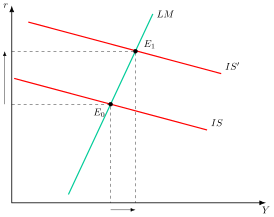
La lógica de los siguientes modelos es la misma que la vista en el pensamiento keynesiano, con la diferencia de que los monetaristas introducen el efecto riqueza que generan tanto la emisión de deuda como la monetización.
Déficit financiado con deuda
Como se observa en la Figura 9.9, la política fiscal expansiva desplaza la curva IS a la derecha (punto \(E_{1}\)).
La emisión de bonos aumenta la riqueza de los agentes, siempre que el mayor número de bonos compense la caída de su precio por la subida del tipo de interés. Por este efecto riqueza:
Aumenta el consumo, lo que desplaza la curva IS de nuevo a la derecha.
Aumenta la demanda de dinero, lo que desplaza la curva LM a la izquierda (punto \(E_{2}\))39.
Por lo tanto, dado que, como decíamos, no tienen lugar los “2 eslabones débiles” keynesianos, se produce un efecto crowding-out total (hasta el punto de que la política fiscal podría llegar incluso a ser contractiva).
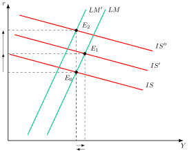
Déficit financiado con monetización
Como se observa en la Figura 9.10:
La política fiscal expansiva desplaza la curva IS a la derecha (punto \(E_{1}\)).
La monetización desplaza la curva LM a la derecha (punto \(E_{2}\)).
Dicha monetización aumenta la riqueza de los agentes, por lo que por dicho efecto riqueza:
Aumenta el consumo, lo que desplaza la curva IS de nuevo a la derecha.
Aumenta la demanda de dinero, lo que desplaza la curva LM a la izquierda (punto \(E_{3}\)).
Por lo tanto, aunque también se produce un efecto crowding-out por el aumento del tipo de interés, el aumento de la oferta monetaria mitiga dicho efecto al disminuir los tipos de interés.
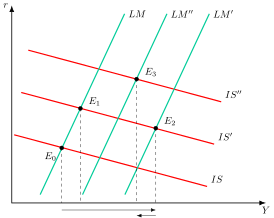
A pesar de que, como vemos, los monetaristas consideran expansiva la financiación del déficit vía monetización, dichos efectos solo se producirán en el corto plazo, mientras que en el largo plazo se anulan (por la Teoría Cuantitativa del Dinero). De ahí que los monetaristas defiendan una política monetaria reglada.
Sin embargo, pese a todo lo señalado anteriormente, no debe concluirse que los monetaristas no concedan importancia a la política fiscal, pues critican su uso como política de demanda. En cambio, sí argumentarán que la política fiscal puede tener importantes efectos sobre la oferta. Por ejemplo, una reducción del impuesto sobre la renta afecta a la Tasa Natural de Paro (oferta de empleo) y con ello al crecimiento económico a largo plazo.
9.A.4. Blinder y Solow y Benjamin Friedman: desarrollo
Para la primera conclusión de Blinder y Solow (la financiación con bonos puede ser más expansiva), el análisis se basa en la restricción presupuestaria del gobierno a largo plazo \[G+B=T\left(Y+B\right) \tag{9.28}\] aquí, el gasto del gobierno, \(G\), incluyendo los pagos de intereses de la deuda, \(B\), se financia con la recaudación fiscal, que grava la renta, \(Y\), y también esos intereses, que entran en la renta de los tenedores de bonos. Es decir, el stock de deuda pública se va a considerar riqueza para quien la posea.
Distinguen entre las dos financiaciones:
Si el déficit se financia con dinero (\(dB=0\)): Un aumento del gasto (\(dG\)) debe ser cubierto por un aumento de los ingresos fiscales (\(T\cdot dY\)). El multiplicador a largo plazo es: \[\left.\dfrac{dY}{dG}\right|_{dB=0}=\dfrac{1}{T} \tag{9.29}\] este resultado indica que la renta crece lo justo para que los ingresos fiscales adicionales cubran el nuevo gasto.
Si el déficit se financia con bonos (\(dM=0\)): El aumento del gasto (\(dG\)) se financia con la emisión de deuda (\(dB\)). El aumento de la renta (\(dY\)) debe ser suficiente no solo para cubrir el gasto adicional, sino también los pagos de intereses de la nueva deuda. El multiplicador a largo plazo es: \[\left.\dfrac{dY}{dG}\right|_{dM=0}=\dfrac{1}{T}+\dfrac{1-T}{T}\cdot\dfrac{dB}{dG} \tag{9.30}\] Como el término \(\frac{1-T}{T}\cdot\frac{dB}{dG}\) es positivo, el multiplicador es mayor que en el caso anterior. Este resultado, contrario a la Macroeconomía tradicional, se explica por la restricción presupuestaria: con bonos, el gobierno tiene que pagar además los intereses de la nueva deuda, y la renta tiene que subir más para que la recaudación los cubra. Solo es válido si el sistema es estable.
Por otro lado, la financiación del déficit con bonos solo es estable si cada bono nuevo eleva la renta lo suficiente para que la recaudación adicional cubra sus intereses, netos del impuesto que pagan los propios intereses. Siendo \(\partial Y/\partial B\) el efecto a corto plazo sobre la renta de un aumento del stock de bonos, se debe cumplir la condición de estabilidad: \[\frac{\partial Y}{\partial B}>\dfrac{1-T}{T}\]
Si esta condición no se cumple, el déficit total y la deuda crecen sin límite, y el multiplicador a largo plazo pierde sentido porque la economía nunca llega a ese equilibrio.40
Modelo de Benjamin Friedman
Friedman (1978) introduce la idea de que los títulos de deuda a corto plazo pueden ser un sustitutivo válido del dinero –ya que representan una mayor calidad que otros tipos de activos–, por lo que financiar déficits con deuda a corto plazo tendría efectos similares a la monetización.
Al igual que el modelo keynesiano de Tobin, Friedman considera que los agentes desean mantener una determinada ratio de liquidez en todo momento, pero supone que, además del dinero, los bonos a largo plazo y el capital, existen también los bonos a corto plazo, que son buenos sustitutivos del dinero: \[\alpha=\dfrac{M+B_{cp}}{B_{lp}+K} \tag{9.31}\] Así, si el Gobierno emite deuda a corto plazo para financiar el déficit (\(\uparrow B_{cp}\)), aumentará la ratio de liquidez (\(\uparrow\alpha\)), y el agente reducirá su demanda de dinero (\(\downarrow M\)), lo que hará que disminuya el tipo de interés y que la curva LM se desplace a la derecha, pues se incentiva la inversión y la renta aumenta (efecto crowding-in).
Sin embargo, la deuda a largo plazo supondría los mismos efectos que la emisión de bonos en la teoría tradicional.
9.A.5. Señoreaje e impuesto inflacionario
La financiación del déficit público a través de la monetización da lugar a dos conceptos relevantes: el señoreaje y el impuesto inflacionario. El señoreaje representa el flujo de bienes y servicios –en términos reales– que pueden ser adquiridos por el sector público gracias a la emisión de dinero.
De acuerdo con la definición anterior, el señoreaje (en términos reales) puede definirse como: \[SE=\dfrac{\Delta M}{P}\] es decir, el aumento de la cantidad de dinero (valor nominal del dinero emitido) entre el nivel de precios, que muestra el valor real del dinero emitido.
Si multiplicamos y dividimos el lado derecho por M tendremos: \[SE=\dfrac{\Delta M}{M}\cdot\dfrac{M}{P}=\theta\cdot\dfrac{M}{P}\] donde \(\theta\) es la tasa de crecimiento de la oferta monetaria.
Si acudimos a la teoría cuantitativa del dinero, sabemos que \(M\cdot V=P\cdot Y\), por lo cual, asumiendo que \(V\) es constante –por ahora asumimos que \(Y\) puede variar–, tendremos que: \[\theta=\pi+g\] donde \(\pi\) es la inflación y \(g\) el crecimiento del PIB.
Por lo tanto, los ingresos por señoreaje serán \[SE=\left(\pi+g\right)\cdot\dfrac{M}{P}\]
Por otro lado, debe señalarse que los ingresos por señoreaje pueden detraer renta del sector privado cuando generan inflación, estableciendo una especie de “impuesto”: el “impuesto inflacionario”.
La inflación es un impuesto para los agentes porque reduce el valor (en términos reales) de sus saldos monetarios. Por tanto, el impuesto inflacionario, \(II\), es: \[II=\pi\cdot\dfrac{M}{P}\] donde \(\pi\) ahora sería el “tipo de gravamen” y \(\dfrac{M}{P}\) sería la “base imponible”.
De todo lo anterior se deduce que, cuando el sector público emite dinero, obtiene ingresos por señoreaje con seguridad, mientras dicha emisión puede generar un impuesto inflacionario o no generarlo, lo que dependerá de la tasa de crecimiento de la economía, dado que \(\theta=\pi+g\). Por lo que:
Si \(\theta=g\), el aumento de la oferta de dinero va acompañado de un aumento paralelo de la demanda de dinero. Por tanto, no hay inflación y la emisión de dinero no genera un impuesto inflacionario.
Si \(\theta>g\), el aumento de la oferta de dinero es mayor que el aumento de la demanda de dinero. Por tanto, se produce inflación y la emisión de dinero genera un impuesto inflacionario.
Así pues, el señoreaje y el impuesto inflacionario son dos conceptos diferentes. Su valor solo coincidirá si la economía no crece, pues entonces la tasa de crecimiento de los precios es igual a la de la oferta monetaria.
A su vez, según el modelo de Cagan, los ingresos por señoreaje se maximizan en el punto en el que la elasticidad de la demanda de dinero respecto a la inflación es igual a 1 en valor absoluto: es el momento en que el aumento de la tasa de inflación compensa exactamente la caída en la demanda de dinero real, permitiendo al gobierno maximizar sus ingresos por señoreaje. Si el gobierno aumenta la inflación más allá de ese punto, los ingresos por señoreaje comenzarán a caer porque la gente huirá del dinero.
Derivación del señoreaje máximo
Supóngase que la producción, \(Y\), es constante, de modo que en estado estacionario la inflación coincide con el crecimiento monetario, \(\pi=\theta\), y el tipo de interés nominal es \(i=r+\theta\), con \(r\) el tipo de interés real. Con la demanda de saldos reales de Cagan (1956), \(\ln\frac{M}{P}=a-b\cdot i+\ln Y\), resulta \(\frac{M}{P}=Y\cdot e^{a-b\left(r+\theta\right)}\). Siendo \(C=Y\cdot e^{a-br}\), el señoreaje es: \[s=\theta\cdot\frac{M}{P}=C\cdot\theta\cdot e^{-b\theta}\]
Derivando respecto a \(\theta\): \[\frac{ds}{d\theta}=C\cdot e^{-b\theta}\cdot\left(1-b\cdot\theta\right)\]
La derivada se anula en \(\theta^{*}=1/b\), y la derivada segunda, \(-b\cdot C\cdot e^{-b\theta}\cdot\left(2-b\cdot\theta\right)\), es negativa en ese punto, luego es un máximo. En \(\theta^{*}\) la elasticidad de los saldos reales respecto de \(\theta\) es \(-b\cdot\theta^{*}=-1\), que es la condición enunciada antes: el aumento del tipo compensa exactamente la caída de la base. Con \(b\) entre 1/3 y 1/2, \(\theta^{*}\) queda entre 2 y 3, es decir, entre el 200 % y el 300 % anual en tasa continua, y el señoreaje en ese punto ronda el 10 % del PIB (Romer 2019, 645-46).
Modelo de Cagan
El modelo de Cagan permite analizar también en qué condiciones la monetización puede generar una dinámica de hiperinflación.
Como todo impuesto distorsionante, el impuesto inflacionario afectará al comportamiento de los agentes. Esto es importante porque la monetización de un déficit que produzca un impuesto inflacionario tendrá por tanto importantes implicaciones sobre la economía. La principal a efectos de la exposición, es que el impuesto inflacionario puede hacer que la monetización genere hiperinflación. Por convención, se considera que existe hiperinflación cuando la inflación supera el 50% mensual.
La demanda de dinero no es constante, sino que obviamente depende de las expectativas de inflación. Cuanta más inflación esperen los agentes, menos dinero demandarán. Por tanto, si la monetización del déficit genera inflación, a medida que aumenta el crecimiento de la cantidad nominal de dinero, también crece la inflación y las expectativas de inflación, y por tanto el coste de oportunidad de tener dinero, y la demanda de saldos reales disminuirá. Esto acentúa el exceso de oferta de dinero y reforzará el proceso inflacionista. Se produce así una espiral inflacionista que puede acabar provocando un proceso de hiperinflación.
Así, el proceso converge o se vuelve explosivo según la rapidez con que se ajustan las expectativas de inflación y la sensibilidad de la demanda de dinero a la inflación esperada. Su análisis se desarrolla en el tema de la inflación.
9.A.6. Desagradable aritmética monetarista
Tradicionalmente, la teoría monetarista consideraba que el déficit público debía financiarse con deuda, ya que la emisión de dinero tenía efectos inflacionistas. Sin embargo, Sargent y Wallace (1981) plantean que la financiación ortodoxa con deuda puede ser aún más inflacionista que los déficits monetizados como exponen en su artículo “Desagradable aritmética monetarista”. La secuencia es la siguiente:
Si la autoridad fiscal mueve primero y fija la senda de déficits, y la autoridad monetaria quiere frenar la inflación hoy restringiendo la base monetaria, habría que recurrir a la emisión de deuda para financiar los déficits fiscales
Los déficits se agravarán con el tiempo, pues al aumentar la deuda aumentan los pagos de intereses, que exigen emitir más deuda, y como el tipo de interés real supera al crecimiento, la deuda crece más deprisa que el PIB –efecto bola de nieve–.
Se puede llegar al punto en el que las finanzas públicas no sean sostenibles, por lo que el mercado se negará a seguir comprando deuda pública, aumentando los intereses. Por consiguiente, solo se podrá pagar la deuda con emisión de dinero lo que disparará la inflación.
Los agentes, que tienen expectativas racionales, anticiparán la monetización de la deuda, de forma que la inflación se acelera al presente a través de reivindicaciones salariales, subidas de precios, etc. En definitiva, las autoridades no serían capaces de controlar la inflación en el presente.
Analíticamente, se parte de la restricción presupuestaria en la que el déficit primario, más los intereses de la deuda, se financia emitiendo deuda pública o dinero \[DPr_{t}+i_{t}\cdot B_{t-1}=B_{t}-B_{t-1}+M_{t}-M_{t-1} \tag{9.32}\]
Gráficamente, en un plano de deuda, output y masa monetaria y su evolución en el tiempo como el de la Figura 9.11, se representa el nivel de deuda que será creciente y cuya pendiente será igual al tipo de interés nominal, el crecimiento del producto nacional cuya pendiente dependerá de la inflación y del crecimiento del producto real, el nivel de deuda sobre el PIB que crecerá hasta que llegue a \(\bar{b}\) que determina el máximo nivel de deuda pública sobre el PIB y, a largo plazo, también se considerará que la creación de dinero será proporcional al producto nacional hasta que el nivel de deuda sobre el PIB llegue al máximo aceptable, punto en el que la creación de dinero se disparará lo que producirá inflación.
En definitiva, si el tipo de interés nominal supera la suma de la inflación y del crecimiento real, es decir, si el tipo real supera al crecimiento, la deuda crecerá más que el producto nacional. En este contexto, un déficit primario financiado con deuda en una economía que no crece será insostenible.
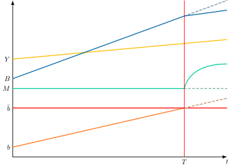
Sin embargo, en la realidad existen economías que crecen a ritmos en los cuales es posible que aumente la renta, lo que aumente la capacidad impositiva y se puedan cubrir los pagos de los tipos de interés.
En cualquier caso, este modelo abre el debate sobre la carga de la deuda pública dados los efectos que tienen los impuestos sobre el crecimiento como se explica en el modelo de crecimiento endógeno de Barro.
9.A.7. Teoría fiscal del nivel de precios
La Teoría Fiscal del Nivel de Precios (FTPL) es un marco macroeconómico que sostiene que el nivel de precios es determinado, en última instancia, por la política fiscal del gobierno, y no solo por la política monetaria. Esta visión desafía la idea tradicional de que la inflación es “siempre y en todas partes un fenómeno monetario”.
Concepto central: la restricción presupuestaria del gobierno
El principio fundamental de la FTPL se basa en la restricción presupuestaria intertemporal del gobierno. Esta restricción establece que el valor real de la deuda pública pendiente hoy debe ser igual al valor presente de todos los superávits primarios y del señoreaje futuros que el gobierno espera generar.
La ecuación clave que lo resume es, siendo \(\tilde{D}_{t}\) los pasivos nominales del gobierno que vencen en \(t\), \(P_{t}\) el nivel de precios, \(f\) el superávit primario real, \(s\) el señoreaje real y \(r\) el tipo de interés real: \[\dfrac{\tilde{D}_{t}}{P_{t}}=\sum^{\infty}_{j=0}\dfrac{f_{t+j}+s_{t+j}}{\left(1+r\right)^{j}}\]
La teoría argumenta que esta ecuación siempre se debe cumplir. Pero ¿qué ocurre si el lado de los activos (los superávits futuros) no es suficiente para cubrir el lado de los pasivos (la deuda actual)? La respuesta de la FTPL es que el único ajuste posible es una caída en el valor real de la deuda a través de un aumento en el nivel de precios, \(P_{t}\). Esto es, inflación.
La lógica de la FTPL frente a la teoría monetaria tradicional
En la Macroeconomía convencional, la política monetaria (la cantidad de dinero en circulación) es la que determina el nivel de precios. El banco central controla la oferta de dinero, y el nivel de precios se ajusta para que la demanda y la oferta de dinero se equilibren. En este modelo, la política fiscal solo influye en la demanda agregada y el tipo de interés.
La FTPL invierte esta causalidad. El nivel de precios se convierte en una variable endógena que se ajusta a las expectativas de la política fiscal. Si los agentes económicos anticipan que el gobierno no va a ser responsable fiscalmente y no generará los superávits necesarios, su única forma de “equilibrar” el balance del gobierno es a través de la inflación. La inflación actúa como un impuesto sobre los tenedores de deuda pública y de otros activos nominales, cuyo valor real reduce.
Un aspecto crucial de la FTPL es el papel de la independencia del banco central. En una teoría monetaria tradicional, un banco central independiente puede controlar la inflación. Según la FTPL, si la política fiscal es insostenible, el nivel de precios sube lo necesario para que el valor real de la deuda iguale al de los superávits esperados, aunque el banco central no cree más dinero. Esto la distingue de la desagradable aritmética monetarista, en la que la inflación llega porque el banco central acaba monetizando la deuda.
Implicaciones
La FTPL tiene implicaciones importantes para el debate sobre la inflación y la política económica:
Credibilidad fiscal: La credibilidad del gobierno es fundamental. Un gobierno que demuestra una política fiscal responsable puede mantener una baja inflación incluso con altos niveles de deuda.
Coordinación de políticas: La FTPL resalta la necesidad de una estricta coordinación entre la política fiscal y la monetaria.
Inflación de demanda frente a inflación de oferta: La FTPL propone un tercer tipo de inflación, la inflación fiscal, que es diferente a la inflación de la demanda (exceso de demanda) o de la oferta (costes crecientes).
9.A.8. Implicaciones de política ante una deuda insostenible
Si la deuda es insostenible, cada vía actúa sobre un término de la ecuación dinámica de la deuda vista en el apartado de sostenibilidad, siendo \(b\) la deuda sobre el PIB, \(d\) el déficit primario sobre el PIB, \(m\) la ratio de dinero sobre el PIB, \(\theta\) la tasa de crecimiento de la masa monetaria, \(r\) el tipo de interés real y \(g\) el crecimiento: \[b_{t+1}=d_{t+1}-m\cdot\dfrac{\theta}{1+\theta}+\dfrac{1+r}{1+g}\cdot b_{t}\]
Las vías sobre \(r\) y \(g\) mueven la pendiente, las vías sobre \(d\) y \(\theta\) mueven la ordenada en el origen y la última reduce el propio stock de deuda.
Crecimiento (\(g\))
Las reformas estructurales y la eficiencia del gasto elevan \(g\) y reducen la pendiente. El efecto es relativo, porque baja la ratio sobre el PIB aunque no baje la deuda en euros. España pasó del 65,4 % del PIB en 1996 al 35,7 % en 2007 (Eurostat 2026).
Inflación y represión financiera (\(r\))
Reducen el tipo de interés real. La inflación inesperada lo consigue porque el tipo de la deuda ya emitida no se ajusta, y solo sirve con deuda en moneda propia. La represión financiera lo consigue con tipos reales bajos o negativos que pagan los ahorradores, mediante instrumentos como limitar la inversión exterior, limitar los intereses de los depósitos bancarios y canalizar el ahorro hacia la deuda pública nacional (Reinhart y Sbrancia 2015). Supone una transferencia de los ahorradores a los deudores.
Monetización (\(\theta\))
Al aumentar \(\theta\) baja la ordenada, porque crece el señoreaje. Si además la inflación resultante no se incorpora por completo a los tipos nominales, el tipo real baja y la pendiente también. Tiene límites claros: el señoreaje máximo, el riesgo de dominación fiscal y, en la Unión Europea, la prohibición, recogida en el artículo 123 del Tratado de Funcionamiento de la Unión Europea, de financiar al sector público con dinero.
Consolidación fiscal (\(d\))
Reducir \(d\) desplaza la curva hacia abajo. En economías con un sistema fiscal y financiero deficiente, la primera palanca es la eficiencia en la recaudación y en la financiación. Tres condicionantes marcan su diseño:
Multiplicador. Blanchard y Leigh (2013) encuentran que, en las economías avanzadas y en los primeros años de la crisis, las consolidaciones más duras se asociaron con un crecimiento peor del previsto, lo que indica que los multiplicadores se habían infravalorado. Si cae \(g\), la pendiente sube y se pierde parte del esfuerzo.
Composición y momento. Alesina y coautores (2018), con datos de 16 países de la OCDE entre 1981 y 2014, hallan que los ajustes basados en recortes permanentes de gasto cuestan mucho menos producto que los basados en subidas de impuestos, y que la composición pesa más que el momento del ciclo.
Credibilidad. Una consolidación creíble puede desencadenar efectos no keynesianos, y las reglas fiscales ayudan a anclarla (se desarrollan en el Apéndice 22.A.7).
Reestructuración o impago (stock de deuda)
Antes de llegar aquí quedan las reformas estructurales, cuyos efectos llegan con retraso, a veces demasiado tarde. Si todo lo anterior no basta, la reestructuración o la condonación reducen el stock, con pérdida de confianza de los inversores y mayores costes de emisión posteriores. Cole y Kehoe (2000) muestran que esa pérdida de confianza puede ser autocumplida: si los inversores dejan de refinanciar, la crisis llega aunque el país fuera solvente.
9.A.9. La situación fiscal de España en 2025
En 2025, España cerró con un déficit público del 2,39 % del PIB, o del 2,18 % sin el gasto extraordinario de la DANA, que supuso 3.550 millones de euros. El saldo primario fue positivo, del 0,21 % del PIB sin la DANA, por primera vez desde 2007. El objetivo pactado con la Comisión Europea era del 2,5 %. La deuda de las Administraciones Públicas se situó en el 100,7 % del PIB, un punto menos que un año antes.41
Previsiones de mayo de 2025: el Informe de Progreso Anual
El Informe de Progreso Anual 2025 fue presentado oficialmente por el Gobierno de España el 1 de mayo de 2025, y remitido ese mismo día a las autoridades comunitarias en cumplimiento de las nuevas reglas fiscales europeas.
Este documento sustituye al antiguo Plan de Estabilidad42 y forma parte del nuevo marco de seguimiento fiscal a medio plazo, que abarca el periodo 2025–2028, con proyecciones extendidas hasta 2031.
Reducción del déficit público
El Gobierno prevé que el déficit público se reduzca del 3,2% del PIB en 2024 al 2,8% en 2025. Esta mejora se atribuye a tres factores principales:
Fin de las rebajas fiscales temporales (electricidad, gas, alimentos)
Contención del gasto público en relación al PIB
Crecimiento económico sostenido, con una previsión del 2,6% en 2025.
Evolución macroeconómica
El informe proyecta un crecimiento del PIB del 2,6% en 2025 y del 2,2% en 2026, impulsado por el consumo privado y la reversión de medidas fiscales. La AIReF considera estas previsiones algo optimistas, debido a la incertidumbre externa y el impacto de nuevos aranceles.
Deuda pública
La deuda pública apenas se reducirá: del 101,8% al 101,7% del PIB. Esto se debe a los desembolsos de préstamos del programa Next Generation EU, que se contabilizan como deuda pero no como déficit.
Reglas fiscales europeas
El informe analiza el cumplimiento de las nuevas reglas fiscales de la UE, centradas en el control del gasto neto computable.43 Para 2025, se estima un crecimiento del gasto neto del 4,1%, por encima del límite pactado del 3,7%. Esta desviación (\(\approx\)0,15% del PIB) se considera tolerable según la normativa europea.
Además, el gasto neto en 2024 fue inferior al objetivo, lo que genera un colchón para absorber la desviación de 2025.
Saldo estructural y saldo estructural primario
El saldo estructural apenas mejora: del –2,9% al –2,8% del PIB
El saldo estructural primario mejora de –0,4% a –0,2% del PIB
Esto refleja una política fiscal neutral, aunque con margen limitado para absorber shocks futuros.
Conclusión
España mejora su posición fiscal en 2025 gracias al crecimiento económico, la reversión de medidas temporales y la contención del gasto. Sin embargo, el margen de maniobra es limitado y el cumplimiento de las reglas fiscales dependerá de mantener esta disciplina en los próximos años.
Términos del glosario de este tema
42 términos · ver el glosario completo
Bibliografía
Es importante distinguirlos:
Los gastos corrientes son los que el gobierno realiza de forma regular para su funcionamiento diario, como los sueldos de los funcionarios y las pensiones. No incrementan el patrimonio del Estado a largo plazo.
Los gastos de capital son inversiones a largo plazo que sí aumentan el patrimonio público y mejoran la capacidad productiva del país, como la construcción de carreteras, escuelas u hospitales.
Las medidas one-off (o medidas no recurrentes) se definen como aquellas que no son permanentes, es decir, aquellas que son puntuales y que no van a volver a darse en los años siguientes (por ejemplo, aumento del gasto público por una catástrofe natural o disminución de los ingresos por un aumento temporal del tipo impositivo).↩︎
La intuición es que se quitan al saldo el ciclo, los intereses y lo extraordinario, y queda lo que depende de las decisiones del gobierno.↩︎
La intuición es que el déficit es el goteo y la deuda es el depósito acumulado.↩︎
La derivación figura en el Apéndice 9.A.1.↩︎
En todo caso, los economistas clásicos no prestaron gran atención a los efectos en el lado de la oferta de cambios en las tasas de impuesto sobre la renta, ya que en la época que escribieron sus teorías, la tasa del impuesto marginal era muy baja y se aplicaba solo a los relativamente ricos.↩︎
Nótese que en el caso de una política fiscal expansiva no tiene lugar el efecto liquidez o efecto Keynes inicial (que sí tenía lugar con una política monetaria expansiva). Ello se debe a que el aumento del gasto público desencadena directamente el efecto renta, mientras que un aumento de la oferta monetaria desencadena una disminución del tipo de interés a través del efecto liquidez o Keynes previo, y esto es lo que genera el efecto renta.↩︎
Nótese que, aunque en el efecto expulsión aumenta la demanda de dinero, la curva \(LM\) no se desplaza hacia la izquierda, pues lo que ha cambiado es la variable de uno de los ejes, la renta, por lo que es un desplazamiento EN la curva \(LM\), no DE la curva.↩︎
La intuición es que quien tiene más patrimonio gasta más y quiere más dinero.↩︎
El análisis gráfico de las dos formas de financiación figura en el Apéndice 9.A.3.↩︎
La derivación completa, con la condición de estabilidad de la deuda, figura en el Apéndice 9.A.4.↩︎
El modelo desarrollado figura en el Apéndice 9.A.4.↩︎
La intuición es que la deuda de hoy son los impuestos de mañana.↩︎
Es el alisamiento impositivo (tax smoothing), que Barro (1979) desarrolla a partir de su propia equivalencia. Si los impuestos distorsionan y su coste crece más que proporcionalmente con el tipo, conviene mantener el tipo estable y dejar que el déficit absorba los gastos extraordinarios y las caídas transitorias de la renta. Se desarrolla en el tema de política fiscal.↩︎
La intuición es que quien piensa dejar herencia a sus hijos ahorra la rebaja de hoy para que ellos puedan pagar el impuesto de mañana. Además, como las vidas son largas, buena parte de esos impuestos se cobra a quienes recibieron la rebaja, de modo que la equivalencia es una buena aproximación incluso sin herencias.↩︎
La equivalencia ricardiana explica los efectos no keynesianos al proponer que, si los agentes son racionales, una consolidación fiscal puede ser expansiva. Cuando el gobierno anuncia recortes de gasto o subidas de impuestos para reducir la deuda, los agentes interpretan esto como una señal de mayor sostenibilidad fiscal futura. En lugar de reducir su consumo, la mayor confianza y la expectativa de impuestos futuros más bajos les motiva a invertir y consumir más en el presente, impulsando así la economía en contra de lo que predice la teoría keynesiana tradicional.↩︎
Diferencia entre solvencia y sostenibilidad: la solvencia es un concepto que hace referencia a un sujeto (por ejemplo, el Estado), mientras que la sostenibilidad se refiere a una política (por ejemplo, la política fiscal). Diremos que un país es solvente cuando el valor presente de sus superávits primarios futuros cubre su deuda, mientras que, como veremos, una política fiscal (o déficit) será sostenible si se puede mantener en el tiempo sin que dé lugar a una situación explosiva. Así, se puede ser solvente sin ser sostenible (al menos durante un tiempo), pero no al revés (es decir, no se puede ser sostenible sin ser solvente).↩︎
Cuando hablamos de sostenibilidad del déficit, nos referimos a un problema de solvencia y no de liquidez: los problemas de liquidez pueden solucionarse refinanciando la deuda, pero los de solvencia exigen cambiar la política fiscal o reestructurar los pagos.↩︎
Tras una expansión fiscal, si el nivel de déficit público es sostenible, el sector público podrá refinanciarla indefinidamente, de manera que no será preciso aumentar los impuestos para hacer frente al principal sino que bastaría con aumentarlos para hacer frente al pago de intereses.↩︎
A partir de aquí, la letra \(b\) denota la ratio de deuda sobre PIB y no la sensibilidad de la inversión de los modelos anteriores.↩︎
La intuición es que la deuda genera intereses, y los intereses generan más deuda.↩︎
Puntualización. Hay que tener en cuenta que el análisis de sostenibilidad, tal y como se ha definido (es decir, ratio deuda pública / PIB constante), aunque es el más habitual, es incompleto, porque no nos dice nada sobre el valor de dicha ratio.
Es decir, el análisis anterior nos dice qué condición debe cumplirse para que la ratio no aumente, pero no tiene en cuenta el nivel de partida de la ratio: obviamente no es lo mismo una ratio del 20% que del 100% porque, para hacer frente a la deuda en el futuro, el esfuerzo en términos de superávit es mucho mayor en el segundo caso.
No obstante, algunos estudios empíricos muestran que, a la hora de determinar la sostenibilidad de la deuda, es más importante la trayectoria que el nivel.
Evidencia empírica: Reinhart y Rogoff (2010) hallaron que, en los países con deuda pública superior al 90 % del PIB, la mediana del crecimiento era aproximadamente un punto porcentual más baja que en el resto. Herndon, Ash y Pollin (2014) detectaron errores de codificación, exclusión selectiva de datos y ponderaciones poco habituales: corregidos, el crecimiento medio en esos países es del 2,2 %, no del \(-\)0,1 % publicado. Además, una correlación no prueba causalidad.
Gráficamente, la dinámica de la deuda funciona de la siguiente manera: nos situamos en el eje de abscisas al nivel de deuda inicial, \(b_{t}\). Desde ahí buscamos hacia arriba (o hacia abajo) la recta de dinámica de la deuda, \(bb\). Una vez la encontramos, buscamos hacia la derecha (o hacia la izquierda) la bisectriz. Y desde ahí, de nuevo hacia arriba (o hacia abajo) hasta volver a encontrar la recta de dinámica de la deuda. Y así sucesivamente.↩︎
No obstante, en los gráficos de sostenibilidad de deuda tratamos la dinámica en términos lineales, es decir, si la dinámica de deuda no fuera lineal el tipo de interés podría ser creciente con el stock de deuda, adoptando una forma exponencial y no lineal.↩︎
Es Estable si \(d>0\) y no se puede monetizar o si \(d>m\cdot\frac{\theta}{(1+\theta)}\) y el tipo de interés es menor que \(g\).↩︎
Solución: Por lo tanto, para que un nivel de deuda pública del 100% fuera sostenible con un tipo de interés real del 3,3% y una tasa de crecimiento del 3,2%, sería necesario exigir un superávit primario tal que la recta de dinámica de la deuda corte a la bisectriz en el punto en el que b=100%, es decir, un superávit primario del 0,1% (lo que nos lleva al caso 3).↩︎
Reinhart y Sbrancia (2015, 294) distinguen cinco canales: crecimiento, ajuste fiscal, impago o reestructuración, un repunte inesperado de inflación y una represión financiera sostenida acompañada de inflación. Aquí se agrupan los dos últimos. El detalle de cada vía figura en el Apéndice 9.A.8, que añade la monetización como palanca sobre la ordenada de la ecuación dinámica de la deuda.↩︎
Las reglas fiscales y la reforma de 2024 del Pacto de Estabilidad y Crecimiento se desarrollan en el Apéndice 22.A.7.↩︎
Según Leeper (1991, 130), una autoridad activa no atiende al estado de la deuda pública y fija libremente su variable de control, mientras que una autoridad pasiva responde a los shocks de deuda y su conducta queda limitada por la optimización privada y por las acciones de la autoridad activa.↩︎
Un ejemplo numérico ilustra la idea. Si el público mantiene saldos reales equivalentes al 10 % de la renta y la oferta monetaria crece un 20 % al año, el gobierno obtiene un señoreaje del 2 % de la renta.↩︎
La derivación del señoreaje y del impuesto inflacionario, y la diferencia entre ambos, figura en el Apéndice 9.A.5.↩︎
Hay que tener en cuenta que esta expresión no define el déficit primario, sino cómo se financia:
Los intereses de la deuda previa se suman al déficit primario: lo que se financia con deuda y dinero es el déficit primario más los intereses.
Es útil en modelos donde se analiza la monetización del déficit o la sostenibilidad fiscal.
Aquí “ricardiano” no se refiere a la equivalencia ricardiana: designa un régimen en el que la restricción se cumple para cualquier nivel de precios. Entre los autores asociados a la FTPL figuran Sims, Woodford y Cochrane (Walsh 2017, 145).↩︎
Tradicionalmente, la teoría monetaria clásica diría que, si un banco central expande la cantidad de dinero, como ha hecho el Banco de Japón durante décadas, la inflación debería dispararse. La FTPL ofrece una explicación alternativa: el nivel de precios depende de la credibilidad fiscal del gobierno, y en Japón, a pesar de su enorme deuda, el gobierno ha logrado mantener la credibilidad de que generará en el futuro los superávits necesarios. Un factor es que la deuda está en manos de residentes. A finales de 2024, el Banco de Japón poseía el 46,3 % de los títulos del Estado y los inversores nacionales el 41,8 %, frente a solo el 11,9 % de los extranjeros (Ministry of Finance, Japan 2025). Esto, combinado con una baja inflación y un alto ahorro interno, minimizó el riesgo de un colapso de la confianza. Otro factor es su posición de inversión internacional neta, de 533 billones de yenes a finales de 2024, que actúa como un colchón financiero aunque ya es la segunda del mundo, por detrás de Alemania (Rogoff y Tashiro 2025). Los autores advierten de que mantener ese privilegio exige gestionar bien la dinámica de la deuda y mantener la inflación bajo control.↩︎
Tratado de Funcionamiento de la Unión Europea, artículo 123, apartado 1.↩︎
La teoría monetaria moderna y el teorema de irrelevancia de Wallace se tratan en los temas de política monetaria.↩︎
Entre los modelos más ricos de crisis de deuda a los que remite Romer (2019, 704) figura el de Cole y Kehoe (2000).↩︎
En su obra A Theory of the Consumption Function, Friedman niega la ley psicológica fundamental de Keynes como teoría explicativa de la demanda de consumo y propone la hipótesis de la renta permanente. Además, los monetaristas introducen los retardos en política fiscal.↩︎
Nótese que la curva LM se desplaza a la izquierda porque lo que varía es la riqueza (que no está en los ejes), mientras que cuando hablábamos del efecto renta keynesiano, se producía un desplazamiento EN la curva LM porque la renta sí está en los ejes.↩︎
La intuición es que cada bono nuevo trae una factura de intereses, y la economía solo se estabiliza si la renta que genera ese bono deja al Estado impuestos suficientes para pagarla.↩︎
Fuentes: nota de prensa del Ministerio de Hacienda sobre el cierre de 2025 (31 de marzo de 2026) y nota del Banco de España sobre la deuda de las Administraciones Públicas (31 de marzo de 2026).↩︎
El antiguo Plan de Estabilidad de España se presentaba anualmente en primavera, en cumplimiento del Pacto de Estabilidad y Crecimiento de la Unión Europea. El último documento bajo esa denominación fue el Plan de Estabilidad 2023–2026, que el Gobierno remitió a Bruselas en abril de 2023.
Este plan incluía:
Previsiones macroeconómicas y fiscales a medio plazo.
Objetivos de déficit, deuda y saldo estructural.
Medidas de consolidación fiscal y reformas estructurales.
A partir de 2024, con la reforma del marco fiscal europeo, el Plan de Estabilidad fue sustituido por el nuevo Informe de Progreso Anual, que forma parte del plan fiscal y estructural plurianual. El primero bajo esta nueva fórmula fue el Informe de Progreso Anual 2025, presentado el 1 de mayo de 2025.↩︎
Las reglas fiscales de la UE y la reforma de 2024 del Pacto de Estabilidad y Crecimiento se desarrollan en el Apéndice 22.A.7.↩︎